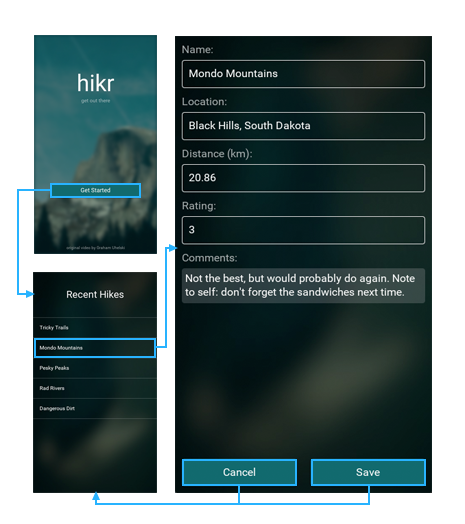

Introduction
In the last chapter, we split the views of our app into separate components, which was a big step forward towards a nice, scalable architecture. We also briefly touched on navigation using a PageControl, which worked fine as a first step towards hooking our pages back together in a meaningful way.
While PageControl works great when you have a couple views that you want presented "side-by-side" with the ability to swipe between them, it's not quite perfect for our use case. For example, our EditHikePage isn't very useful until it actually has a hike to edit, so it doesn't make sense to simply swipe to that view. Instead, we'd like to navigate to that view once we've selected one of the available hikes to edit in our HomePage, and it'd be even better if we didn't have to keep the EditHikePage around until we needed it.
As it turns out, Fuse provides tools to handle all of this using the Navigator class. In this chapter, we'll take a look at how we can use the Navigator to make more complex navigation flows, and how we can tie that together with JavaScript to create individual page models to further componentize our app.
The final code for this chapter is available here.
Migrating to Navigator
Similar to a PageControl, a Navigator is a navigation container. This is a fancy way of saying it's a control that can contain components (usually Pages) that we can navigate to. However, unlike a PageControl, a Navigator uses templates to instantiate its child components on-demand. This allows a Navigator to instantiate and recycle pages as needed, conserving precious system resources. Also, Navigator doesn't support swiping between its pages by default like PageControl, but that's because it can express richer relationships between its children. It is of course possible to add swiping behavior to pages in a Navigator for the cases where that's needed.
So, how do we request which component to navigate to when using a Navigator? we'll cover that in the next section when we cover how to hook the Navigator up to JavaScript. Essentially, the best way to explain these concepts is to see them in action, and before we do that, we need a Navigator. So let's start by replacing our PageControl with a Navigator!
First, let's open up MainView.ux, and simply replace PageControl with Navigator:
<App>
<ClientPanel>
<Navigator>
<HomePage />
<EditHikePage />
</Navigator>
</ClientPanel>
</App>
Now, because the Navigator expects templates instead of instances for its children, we'll need to update these as well. Luckily, Fuse makes this pretty easy - all we have to do is add a ux:Template attribute to each of our Navigator's children, like so:
<App>
<ClientPanel>
<Navigator>
<HomePage ux:Template="HomePage" />
<EditHikePage ux:Template="EditHikePage" />
</Navigator>
</ClientPanel>
</App>
[callout info] By convention, we name the templates the same as the class names when used in a navigation context. Why, will become apparent in the next section. [/callout]
Basically, what each of these attributes says is that for a given key (HomePage and EditHikePage in this case), we want the Navigator to instantiate the associated class. So, if the Navigator is asked to navigate to HomePage, it will instantiate a HomePage instance (if it hasn't already) and navigate there. Similarly, when asked to navigate to EditHikePage, it will instantiate an EditHikePage instance (if it hasn't already) and navigate to that instead. We can add any amount of templates we want, given that each of the keys is unique (if they weren't, the Navigator wouldn't know which template to use for a given key).
Now, if we save this, our previews will update, but our pages will disappear! This makes sense, because we've only specified which templates our Navigator will use to create its child components, but we haven't asked it to actually instantiate anything yet. Typically, we'll do this by navigating to a specific route, as we'll see in the next section. However, Navigator also supports specifying a default path that will be used to create a default child if we haven't navigated to one of its children yet. This is a common case that's perfect for our use case, as we'll want our Navigator to display our HomePage first, and then navigate to the EditHikePage once we've selected a hike to edit.
To specify the default path for our Navigator, all we have to do is add a DefaultPath attribute which will specify the key of the template we want the Navigator to instantiate initially:
<App>
<ClientPanel>
<Navigator DefaultPath="HomePage">
<HomePage ux:Template="HomePage" />
<EditHikePage ux:Template="EditHikePage" />
</Navigator>
</ClientPanel>
</App>
Now, when we save this, our HomePage will be displayed like we expect. Cool! Note that we can also change the DefaultPath to EditHikePage to show our EditHikePage if we'd like. Feel free to try it!
Routing
Now that we're using a Navigator and templates, it's time to tell the Navigator which Page we want to navigate to. This part is actually done using JavaScript.
We usually model simple navigation like the one we need here using an stack of pages. Whichever is the top most page on the stack is the page that is currently active. Using a stack like this, we can easily push and pop pages onto the stack, and automatically get a navigation history that we can navigate back through.
The easiest way to model a stack is to just use a simple JavaScript array. We start by adding a field to our App class called pages, and initialize it to an empty array:
this.pages = [];
Then we databind the Pages property of our Navigator to this field:
<Navigator Pages="{pages}">
...
At this point, we need something that represents each of our pages in JavaScript. For that, we use normal ES6 classes, which will act as view models for our pages. Remember how we named the ux:Templates in the previous section? The main reason for this naming convention, is because the Navigator will automatically pick which template to instantiate based on the class name of the items in our pages array.
Lets start by creating a model for our HomePage. Create a new file called HomePage.js and put it next to HomePage.ux in the Pages folder. In this file, we want to export a class by the same name as our template for HomePage (which we conveniently named exactly the same):
export default class HomePage {
}
We then want to instantiate this class in our pages array in our App class. In order to do this, we first need to import our newly created class by adding the following to the top of App.js:
import HomePage from 'Pages/HomePage';
Then we create a new instance of HomePage directly in our newly created pages array:
this.pages = [new HomePage()];
Since we have now defined the default path to be HomePage by initializing the pages array with this type, we no longer need the DefaultPath property on our Navigator, so you can go ahead and remove that:
<Navigator Pages="{pages}">
We should now see our HomePage in the preview window, but you'll notice that it is no longer possible to swipe to navigate to EditHikePage. What we'll do instead is to navigate to EditHikePage whenever the user clicks one of the buttons in HomePage.
The first thing we need to do, is to create an ES6 class for our EditHikePage as well, which we'll do by the exact same process as for HomePage:
EditHikePage.js
export default class EditHikePage {
}
Next, we import it in App.js, just like we did with HomePage:
import EditHikePage from 'Pages/EditHikePage';
Now we are ready to tell our Navigator to navigate after we've chosen a hike. We do this by modifying our chooseHike method to push a new instance of EditHikePage to the pages array, after we've set the current hike:
chooseHike(arg) {
this.hike = arg.data;
this.pages.push(new EditHikePage());
}
If you hit save, you should now notice that we are indeed navigating to EditHikePage when we click one of the buttons in HomePage. Pretty easy, right?
The last thing we want to fix before we finish up, is to add a way of navigating back to HomePage. This is very simple! All we need to do is to "pop" an element from the pages array, which is the same as removing the current page from the stack:
goBack() {
this.pages.pop();
}
We then need a button on our EditHomePage that is bound to this function so that the user can navigate back:
At the following below all the Text and TextBox elements in EditHikePage.ux:
<Button Text="Back" Clicked="{goBack}" />
While we're at it, lets rename our chooseHike method to something that's more descriptive of its current function, like goToHike. Make sure you also update the binding in HomePage.ux.
goToHike(arg) {
this.hike = arg.data;
this.pages.push(new EditHikePage());
}
And that's all it takes! We now have a proper navigation up and running, and even separate page models which we can use to separate the business logic for each page.
This is what the current flow of our app looks like:

Passing data to our page models
Our entire app model currently resides in App.js. Having all our data here is fine for now, but we at least want to move the view specific code, like which hike has been selected, in the page that cares about this information (which in this case is EditHikePage).
We start off, by adding a constructor to our EditHikePage class in EditHikePage.js. It should accept the hike it is supposed to edit as an argument:
constructor(hike) {
this.hike = hike;
}
Next up we need to make sure we pass the current hike to the class when we instantiate it in our goToHike function:
goToHike(arg) {
this.pages.push(new EditHikePage(arg.data));
}
Make sure you also remove the this.hike field from our App class' constructor.
And at this point we're all done. Whatever we want EditHikePage to do with the current hike can now be handled by the EditHikePage class.
Our progress so far
At this point, we've got our two components all set up with navigation! Our app currently looks like this:

And here's the code for the various files we modified in this chapter:
MainView.ux
<App Model="App">
<ClientPanel>
<Navigator Pages="{pages}">
<HomePage ux:Template="HomePage" />
<EditHikePage ux:Template="EditHikePage" />
</Navigator>
</ClientPanel>
</App>
App.js
import HomePage from 'Pages/HomePage';
import EditHikePage from 'Pages/EditHikePage';
class Hike {
constructor(name, location, distance, rating, comments) {
this.name = name;
this.location = location;
this.distance = distance;
this.rating = rating;
this.comments = comments;
}
}
export default class App {
constructor() {
this.pages = [new HomePage()];
this.hikes = [
new Hike(
"Tricky Trails",
"Lakebed, Utah",
10.4,
4,
"This hike was nice and hike-like. Glad I didn't bring a bike."
),
new Hike(
"Mondo Mountains",
"Black Hills, South Dakota",
20.86,
3,
"Not the best, but would probably do again. Note to self: don't forget the sandwiches next time."
),
new Hike(
"Pesky Peaks",
"Bergenhagen, Norway",
8.2,
5,
"Short but SO sweet!!"
),
new Hike(
"Rad Rivers",
"Moriyama, Japan",
12.3,
4,
"Took my time with this one. Great view!"
),
new Hike(
"Dangerous Dirt",
"Cactus, Arizona",
19.34,
2,
"Too long, too hot. Also that snakebite wasn't very fun."
)
];
}
goToHike(arg) {
this.pages.push(new EditHikePage(arg.data));
}
goBack() {
this.pages.pop();
}
}
Pages/HomePage.ux:
<Page ux:Class="HomePage">
<ScrollView>
<StackPanel>
<Each Items="{hikes}">
<Button Text="{name}" Clicked="{goToHike}" />
</Each>
</StackPanel>
</ScrollView>
</Page>
Pages/HomePage.js:
export default class HomePage { }
Pages/EditHikePage.ux:
<Page ux:Class="EditHikePage">
<ScrollView>
<StackPanel>
<Text>Name:</Text>
<TextBox Value="{hike.name}" />
<Text>Location:</Text>
<TextBox Value="{hike.location}" />
<Text>Distance (km):</Text>
<TextBox Value="{hike.distance}" InputHint="Decimal" />
<Text>Rating:</Text>
<TextBox Value="{hike.rating}" InputHint="Integer" />
<Text>Comments:</Text>
<TextView Value="{hike.comments}" TextWrapping="Wrap" />
<Button Text="Back" Clicked="{goBack}" />
</StackPanel>
</ScrollView>
</Page>
Pages/EditHikePage.js:
export default class EditHikePage {
constructor(hike) {
this.hike = hike;
}
}
What's next
Our components are working together, which is awesome! In the next chapter, we'll work on mocking up a backend. This will help us nail down the architecture of our app to make it easier to add a real backend at some point in the future. So let's dig in!
The final code for this chapter is available here.